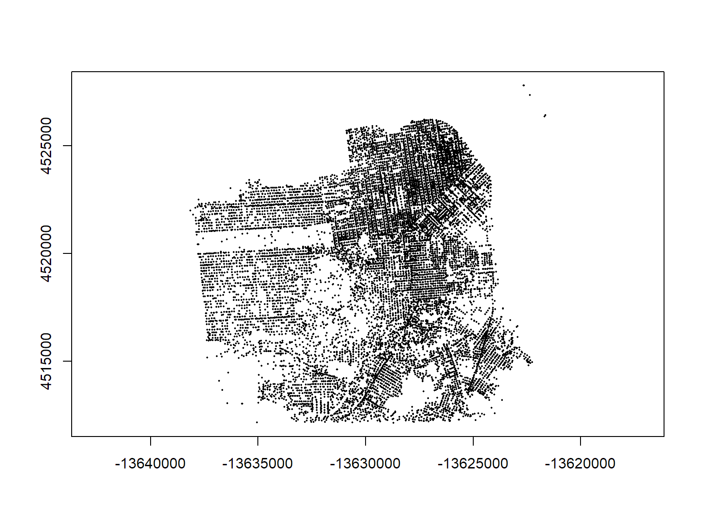

R-ArcGIS Bridge
Requires a licensed ArcGIS desktop version
The R-ArcGIS Bridge works for
library(arcgisbinding)
library(sp)
arc.check_product()## product: ArcGIS Pro ( 12.1.0.10257 )
## license: Advanced## Create the connection
crimepts_con <- arc.open(path="../exercises/data/SF_Crime.gdb/San_Francisco_Crimes")
## Display info (metadata)
crimepts_con## type : FeatureClass
## path : ../exercises/data/SF_Crime.gdb/San_Francisco_Crimes
## fields : OBJECTID, Shape, Field1, Dates, Category, Descript,
## fields : DayOfWeek, PdDistrict, Resolution, Address, X, Y
## extent :
## xmin ymin xmax ymax
## -13638156 4512125 -13621636 4527822
## *** shapeinfo ***
## type : Point
## WKT : PROJCS["WGS_1984_World_Mercator",GEOGCS["GCS_WGS_1984",DATUM["D_WGS_1984",SPHEROID["WGS_1984",6378137.0,298.257223563]],PRIMEM["Greenwich",0.0],UNIT["Degree",0.0174532925199433]],PROJECTION["Mercator"],PARAMETER["False_Easting",0.0],PARAMETER["False_Northing",0.0],PARAMETER["Central_Meridian",0.0],PARAMETER["Standard_Parallel_1",0.0],UNIT["Meter",1.0]]
## WKID : 3395Import to R as "ArcGIS data frame".
crimepts_adf <- arc.select(crimepts_con)
names(crimepts_adf)## [1] "OBJECTID" "Field1" "Dates" "Category" "Descript"
## [6] "DayOfWeek" "PdDistrict" "Resolution" "Address" "X"
## [11] "Y"nrow(crimepts_adf)## [1] 74760attr(crimepts_adf, "shape")## type : Point
## WKT : PROJCS["WGS_1984_World_Mercator",GEOGCS["GCS_WGS_1984",DATUM["D_WGS_1984",SPHEROID["WGS_1984",6378137.0,298.257223563]],PRIMEM["Greenwich",0.0],UNIT["Degree",0.0174532925199433]],PROJECTION["Mercator"],PARAMETER["False_Easting",0.0],PARAMETER["False_Northing",0.0],PARAMETER["Central_Meridian",0.0],PARAMETER["Standard_Parallel_1",0.0],UNIT["Meter",1.0]]
## WKID : 3395
## length : 74760Convert to a sp object.
crimepts_spdf <- arc.data2sp(crimepts_adf)
class(crimepts_spdf)## [1] "SpatialPointsDataFrame"
## attr(,"package")
## [1] "sp"Plot.
plot(crimepts_spdf, axes=TRUE, pch=16, cex=0.3)